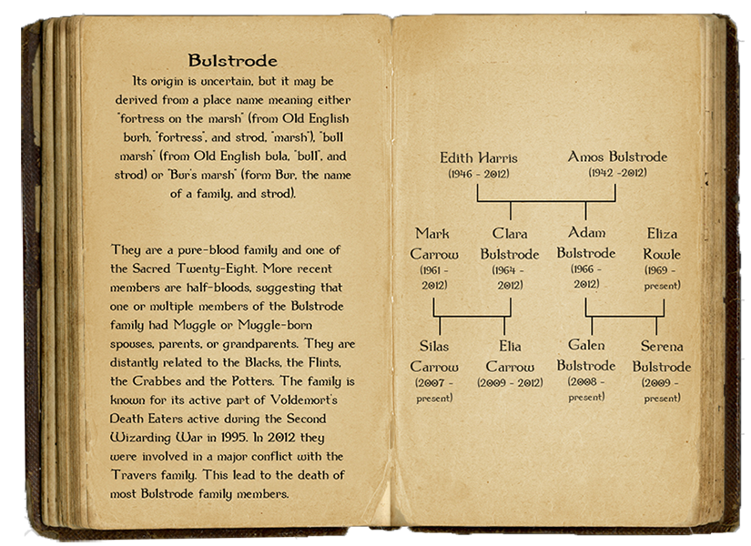

How horrible! No wonder Leonora has kept her last name a secret all this time. The book doesn’t
specifically mention what happened between the families, but the loss for both the Bulstrode and
Carrow family is undeniably heartbreaking. However you do know that whatever happened between both
families, Leonora didn’t have anything to do with it. Which is why it’s unfair that they’re taking
out their anger on her. A first year shouldn’t have to pay for the consequences of something that
happened when she was only three years old.
You really want to talk to her but she went home for the holidays. You feel guilty for finding out
about her family's past so you think it’s for the best if you come clean to her about it. You decide
to talk to her about it as soon as she gets back to Hogwarts after Christmas break.